Examples#
This is a collection of examples in Earth2Studio that demonstrate various functionality and commonly used workflows.
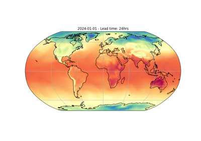
Running Deterministic Inference
Running Deterministic Inference


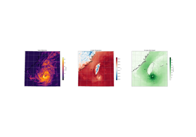
Generative Downscaling
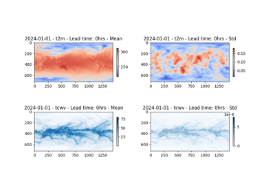
Single Variable Perturbation Method
Single Variable Perturbation Method
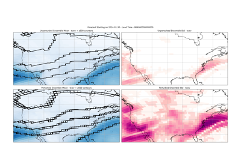
Model Hook Injection: Perturbation
Model Hook Injection: Perturbation

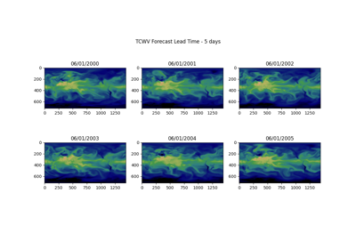
Distributed Manager Inference
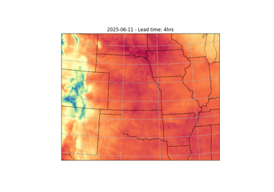
Running StormCast Inference
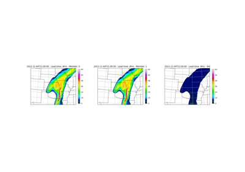
Running StormCast Ensemble Inference
Running StormCast Ensemble Inference
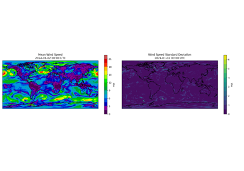
Huge Ensembles (HENS) Checkpoints
Huge Ensembles (HENS) Checkpoints
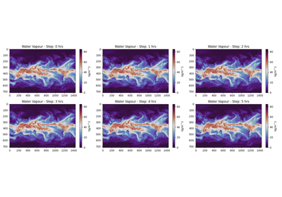
Temporal Interpolation
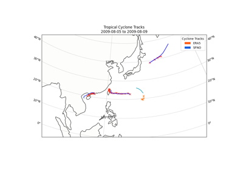
Tropical Cyclone Tracking
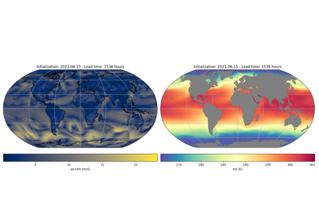
Running DLESyM Inference
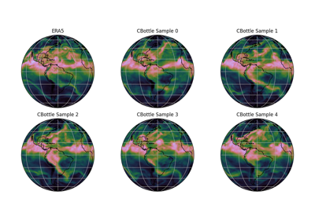
CBottle Data Generation and Infilling
CBottle Data Generation and Infilling
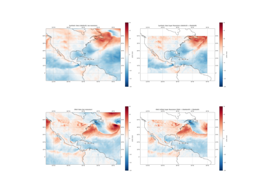
CBottle Super Resolution
Extending Earth2Studio#
Examples focused on demonstrating how to extend Earth2Studio with user-defined components.
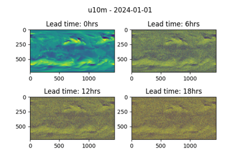
Extending Prognostic Models
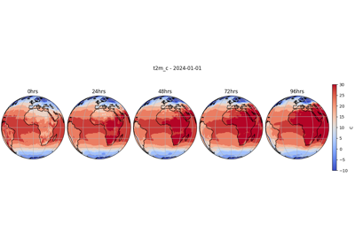
Extending Diagnostic Models
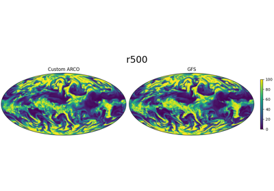
Extending Data Sources